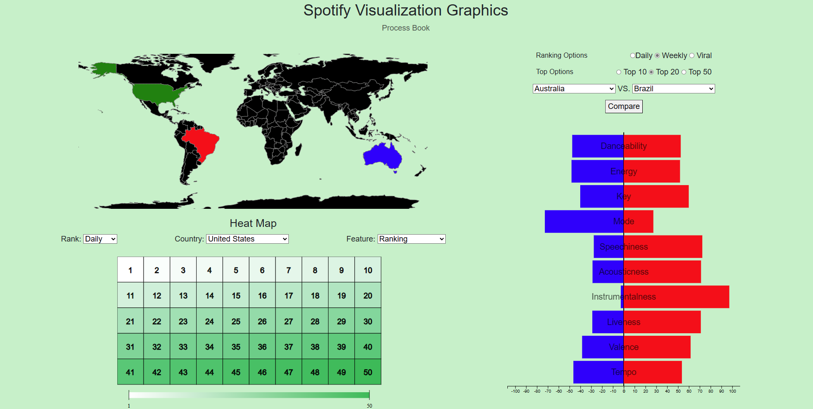
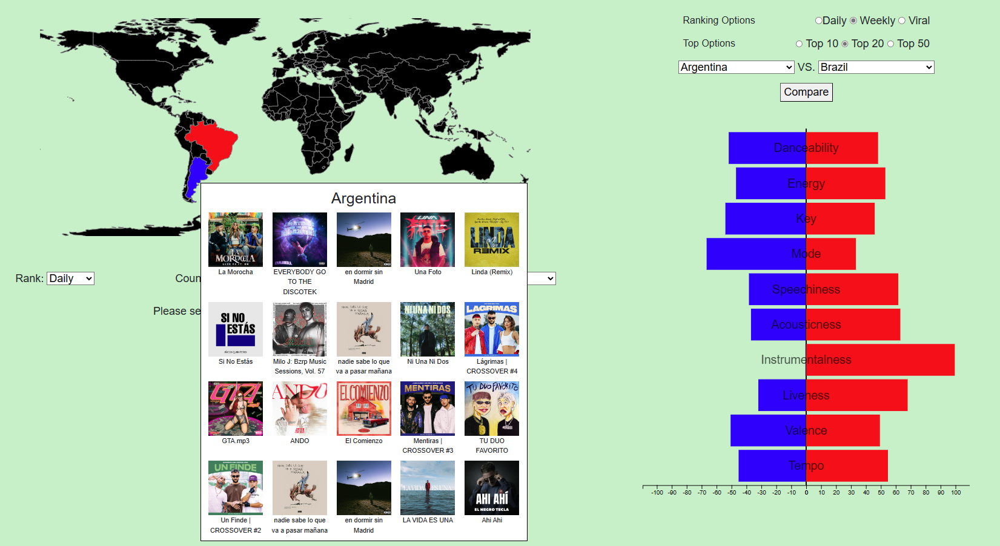
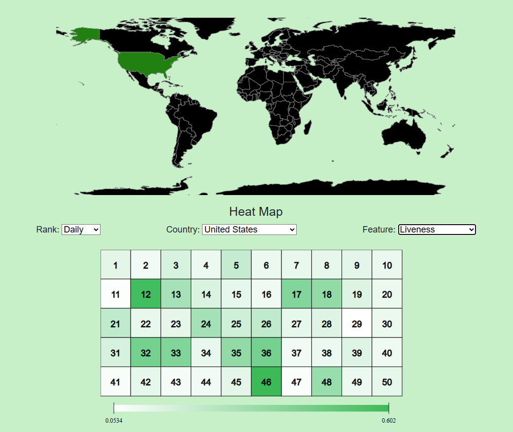
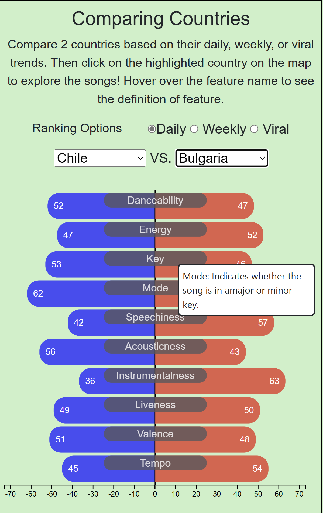
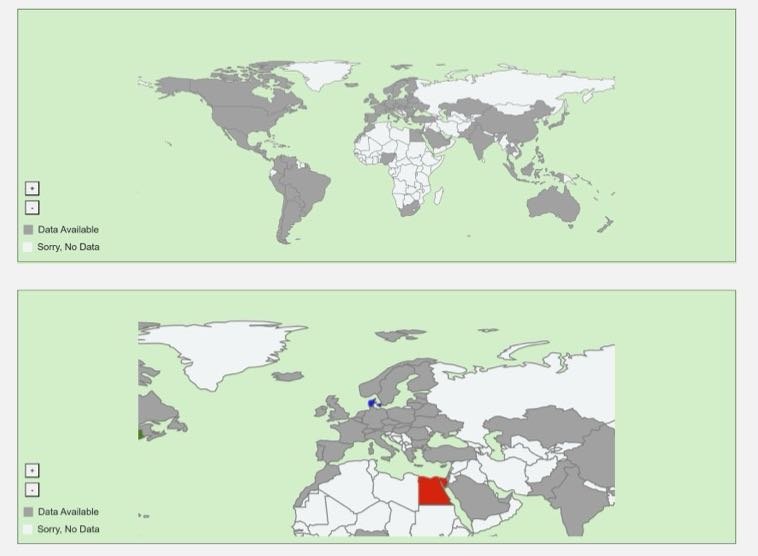
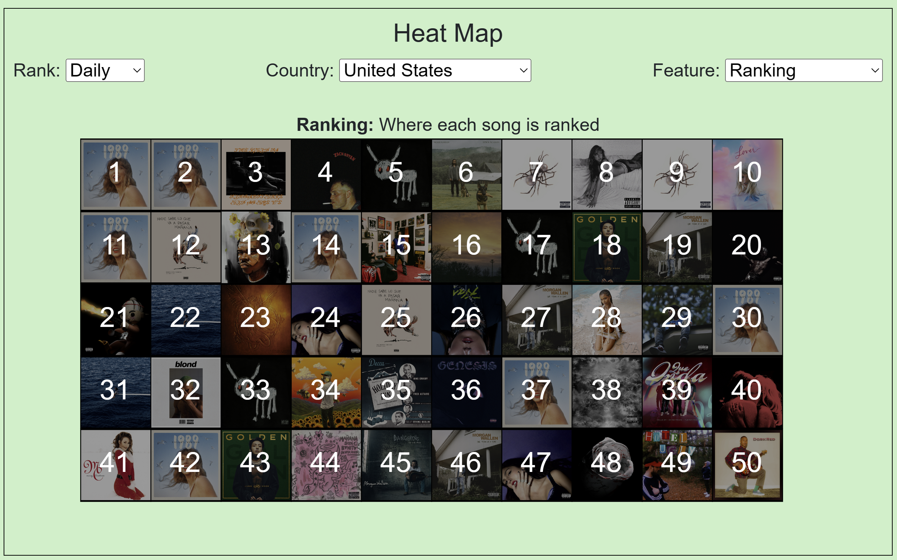

Name: Alice Mao; E-Mail: amao@wustl.edu; UID: 501333
Name: Tianqi Xu; E-Mail: tianqi.x@wustl.edu; UID: 520183
Name: Yijia Wei; E-Mail: w.yijia@wustl.edu; UID: 513538
Spotify has 165 million subscribers, which are distributed around the world except for only a few
countries.
Spotify offers a variety of music charts to demonstrate the daily, weekly, and viral ranking for songs
in
different countries.
Our team realized that it would be useful to have a visualization that
gathers
the ranking information and allows users to quickly view countries
rankings they are interested in. It would save users time from searching a specific country’s ranking on
Spotify Website. Our team also has a high interest in studying whether there are different music
preferences
for users in different countries.
We want to create a visualization that compares two or more
countries’ top songs quantitatively and graphically through the artist information, album information,
and
song features.
Our project is inspired by the content we exercised in Studio 8 and Studio 10. We want to implement
Geospatial Map and Bubble Chart to visualize different rankings and genre in Spotify for different countries.
Our project is also inspired by
Investigating Country-Specific Music Preferences and Music Recommendation Algorithms with the LFM-1b Dataset
written by Markus Schedl. This paper provides statistical analysis based on country information of users and
genre tags of artists. The paper also studies the taste profiles and determines the similarity and dissimilarity
between different countries in terms of music preferences. One of the feature in our project is inspired
by the chart that compares the similarity of genre between a list of countries in this paper, as shown
in figure below. We want to create a new visualization so that the users can not only select countries
they are interested in but also have a stronger and more concise comparison of music preference.
1. Is there a difference in music preference between different countries?
2. What is the best way to help users to visualize the music preference in those countries they are
interested in?
3. Are there specific music trends, such as danceability and energy, that make are more popular that
others?
1. Gather the music charts in Spotify and demonstrate the chart based on users’ choice
2. Learn music preferences across the world
3. A concise way to visualize the difference in music preferences
4. Discover new music from other genres and/or languages
Link to Data: Web API | Spotify for Developers.
We are retrieving music charts from Spotify by calling Spotify API. The weekly top 50 music charts we
are going to use are the one for global and ones for multiple countries, including but not limited to United
States, Denmark, Israel, Canada.
The daily top 50 music charts we are going to use are one for global and ones for multiple countries.
In addition to weekly and daily music charts, we will also explore the global and each country’s viral
50 songs to track those songs that are quickly rising in plays.
Data Processing:
We will retrieve music charts and detailed information by calling Spotify API and then write them to
three JSON files.
The first JSON file, daily_top_50.json, will include daily ranking for global and 73
countries.
The second Json file, weekly_top_50.json, will include weekly ranking for global and 58
countries.
The third JSON file, daily_viral_50.json, will include daily viral songs for global and 75
countries.
For each song that are listed in these files, more detailed information will also be
included:
We first want to study whether there exists a difference of song preference in different countries. The visualization we are using here is the boxplot. For each ranking, we first calculate the mean value for different song features, grouping by country. Then, based on these average values, we created three boxplots for daily, weekly, and viral ranking. From each of these boxplot images, we can see that for most of the song features, they have a relatively large range. This indicates that there exist a difference of song preference in different countries based on these song features, which makes out visualization in this project meaningful.
For Milestone 1, we focued on collecting and cleaning all the data we retrieved from the Spotify API. We started by importing all the "daily top 50", "viral top 50", and "weekly top 50" data, separated by country, into our project's data folder. Then we merged all the data from each country into three large data sets: "daily_top50_merged_json", "viral_top50_merged_json", "weekly_top50_merged_json". This will make it so we can display general trends across the globe.
We also added one of the 3 visualizations we wanted to have. With the comparison chart, we added interactivity so that users can selected which 2 countries they wanted to compare. Based on their input an svg bar graph would update to represent the musical trends from both countries. We also added 2 additional divs that will eventually hold the geospatial map and the bubble map.
Milestone 2: The figure above is an overview of our visualization. Compared to the visualization in Milestone 1, we now have geospatial map implemented. For the bubble chart in Milestone 1, we decided to convert it to a heat map. For the third visualization, the comparison table is deleted, and we only keep the funnel chart to compare music features of two countries selected.
The geospatial map is updated simultaneously with the country-selection in comparison chart on the right. Two countries that are selected on the comparison chart will be highlighted with blue and red in the world map. If the user then click on any of these two highlighted countries, a tooltip will show up with top songs in that specific country. List and number of songs will vary based on users' choice of Ranking Options and Top Options. The image above is an example of how these two visualizations work together. A user selected Weekly Top 20 ranking option and then selected Argentina and Brazil for comparison. The bar chart is updated with average song features for weekly top 20 songs in two countries. Two countries is highlighted in geospatial map. If the user click on Argentina (blue space), weekly top 20 songs in Argentina will appear in the tooltip.
The heat map is used in milestone 2 to replace the bubble chart in milestone 1. After we finished implementing the bubble chart, we discovered that bubbles might overlap with each other, which makes it difficult to acquire useful information. We thus decided to implement heat map. In the heat map, we can layout all 50 songs in a more concise way than bubble chart. Users can easily hover over a specific ranking number to see detailed information. The color scale of heat map also help users to study whether there exists a trend for selected features.
Users can select countries in two different ways. The first way is to select their interested country from the dropdown list. The second way is to interact with the geospatial map above by clicking on a specific country, which will then highlighted in green. After selecting a country, users can choose a specific music feature, including popularity, ranking, danceability, energy, key, mode, speechiness, acousticness, instrumentalness, liveness, valence, and tempo. The heat map will then be updated based on users' selections. In the figure above, United States is selected, and the map is highlighted in green. The chosen feature is liveness, then the heat map will be updated with liveness value of daily top 50 songs in the United States with a color scale.
Final Design:Based on the comments of Milestone 2, we made several modifications to our design. We first add borders to each of our visualizations to make some distinctions. We also made several updates to each of our visualizations, and the update will be demonstrated below.
For the comparison chart, the first change is that the users can see a live update when they change the countries they selected so that they don't have to click the compare button every time they change country selection. The second modification is to add detailed explanation of each song feature when users hover over so that they can have a better understanding of each feature. The third update is to add scores on each bar, which provides an additional choice to understand the value other than the scale bar below.
For the global map, the first change we add different colors for country available and unavailable so that there is a contrast. The second change is that the new map does not cut off at the top so that all countries can be shown on the map. The third change is that we add zoom in and zoom out feature. The zoom in feature works typically well when users select European countries, which sometimes can be hard to find on map with original size. With zoom in feature, countries like Denmark, Dominican Republic, Belarus, and etc., can now be easily found on the map.
For the heat map, we diminished the opacity and put a black background behind each album image to make the numbers more visible while still being able to see the images. We also made the numbers white only for the ranking setting.
By using our visualizations, we can view comparison chart and heat map to understand the music preference in different countries. We can use comparison chart to compare the top music in one country with another country. We can also use heat map to understand the detailed ranking information of top songs in the selected country. Using Denmark as our example, from comparison chart, we discovered that the instrumentalness of top songs in Denmark is relatively low compared to other countries. From ranking of heat map, we can discover that, unlike many other countries, songs of Taylor Swift only ranks at 35th place in Denmark. For future development, we aim to update the website on a daily basis by using the latest data from Spotify. We also aim to update the comparison chart so that users can select more countries for comparison. Another possible development is to create a visualization to compare song preferences in different continents or regions.